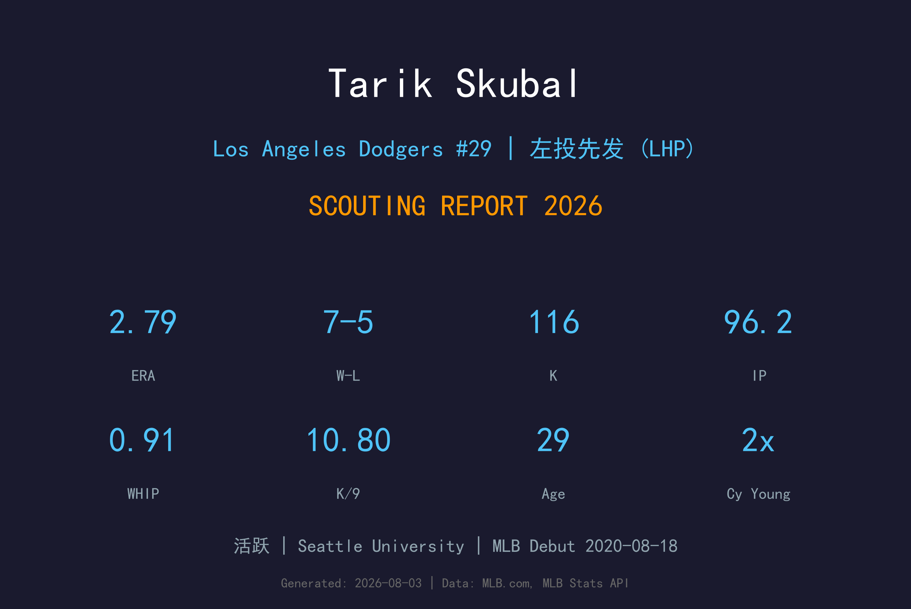
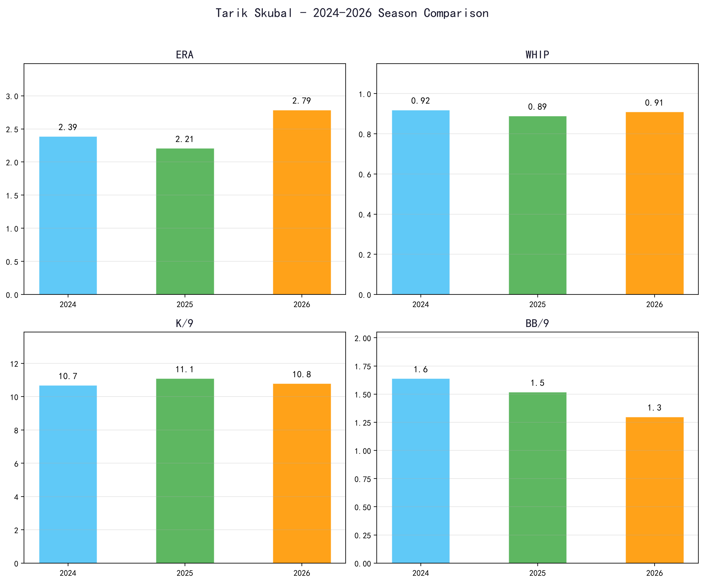
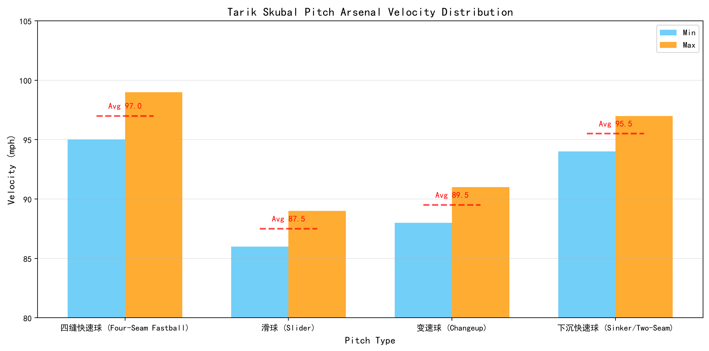
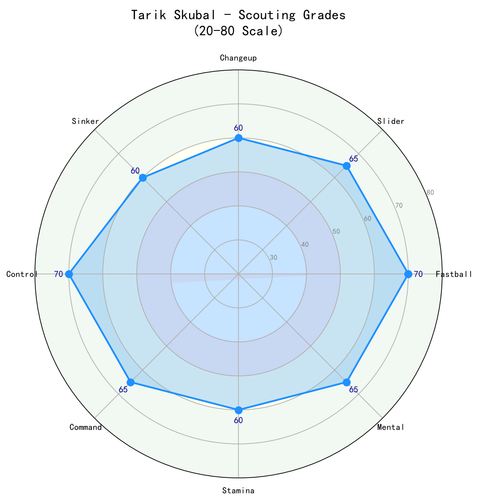

Los Angeles Dodgers #29 | 左投先发 (LHP) | 活跃

Tarik Skubal 是当今大联盟最顶尖的左投先发之一，连续两季（2024、2025）夺得美联赛扬奖，并在2024年包办胜投、ERA、三振三冠王。2026年交易截止日前，道奇将他纳入阵中，立刻让轮值多了一名王牌级左投。
他的球风以高压快速球 + 犀利滑球为核心，搭配优质的变速球与伸卡球。2026年在老虎队仍缴出 7胜5败、2.79 ERA、0.91 WHIP 的顶尖数据，三振保送比超过 8:1，显示控球已是 elite 水准。
加盟道奇后，Skubal 预计将成为季后赛轮值的 pillar。他的存在不仅能直接提升先发战力，也能让 Yamamoto、Sasaki 等年轻投手减少压力，是道奇冲刺冠军的最关键补强。
来自 Seattle University，2018年选秀第9轮（总第255顺位）被底特律老虎选中。大学时期创下校史胜投（21）、三振（224）与被打击率（.221）纪录。
2020年8月18日登上大联盟，生涯初期起伏较大，但快速展现出三振潜力。2021年以164次三振刷新老虎新秀单季三振纪录。
31场先发、18胜4败、2.39 ERA、228 K，包办美联胜投、自责分率、三振三冠王。成为老虎队史继 Justin Verlander、Hal Newhouser 后第三位三冠王投手，并勇夺生涯首座赛扬奖。
31场先发、13胜6败、2.21 ERA、241 K，0.89 WHIP 为大联盟最低。成为自1999-2000年 Pedro Martinez 以来首位连庄美联赛扬的投手，并连续入选全明星赛。
2026年交易截止日前被交易至洛杉矶道奇，背号 #29。道奇希望借助他的王牌身手稳住先发轮值，并在季后赛提供顶级左投战力。

📈 上图为近三年核心数据趋势。柱状图高度代表该年度表现，便于快速比较球员状态的上升或下滑。
| 赛季 | G | GS | W-L | ERA | IP | K | BB | WHIP | K/9 |
|---|---|---|---|---|---|---|---|---|---|
| 2024 | 31 | 31 | 18-4 | 2.39 | 192.0 | 228 | 35 | 0.92 | 10.69 |
| 2025 | 31 | 31 | 13-6 | 2.21 | 195.1 | 241 | 33 | 0.89 | 11.10 |
| 2026 | 16 | 16 | 7-5 | 2.79 | 96.2 | 116 | 14 | 0.91 | 10.80 |

⚾ 上图为各球种球速区间（蓝=最低球速，橙=最高球速，红线=平均值）。球速差与位移差越大，打者越难锁定单一球路。
95-99 mph
Skubal 的压制核心。均速约 97 mph，最高可达 99 mph，具有优异的纵向位移。他善于用快速球抢 strike、制造追打，并能对抗左右打者。
86-89 mph
主要出局球，锐利位移 且横向位移大。在两好球后用来制造挥空，对付右打者外角与左打者后脚特别有效。
88-91 mph
优质第三球种，出手点与快速球相近，速度差约 8 mph。用来让打者重心前移、制造软弱滚地球或挥棒落空。
94-97 mph
近年增加的球种，利用下沉位移制造滚地球，减少长打伤害。与四缝快速球搭配，让打者难以判定轨迹。
Skubal 采用高四分之三（high-three-quarters）出手点，身体平衡良好，跨步方向稳定。他的快速球出手隐蔽，加上 slider 与 changeup 的释放点高度相似，让打者很难提前辨认球路。整体机制重复性高，是他能稳定维持低保送率的关键。
2024 年是 Skubal 的爆发年：18 胜 4 败、2.39 ERA、228 K，首次突破 190 局并包办美联三冠王。2025 年他将 ERA 进一步压到 2.21，K/9 提升至 11.10，WHIP 0.89，连续两季投出赛扬等级内容。2026 年虽然 ERA 小幅回升至 2.79，但 WHIP 仍维持在 0.91 的 elite 水准，BB/9 从 1.64 → 1.52 → 1.30 持续进步，显示控球仍在进化。
2026 年 2.79 ERA 相较于 2024-2025 的 2.21-2.39 略有上扬，主要与季中交易传闻、老虎队战绩压力以及小样本波动有关。值得注意的是他的三振保送比从 2024 年的 6.5:1 提升至 2026 年的 8.3:1，压制上垒能力并未下滑。加入道奇后，在更强的防守与牛棚支援下，ERA 有机会回到 2.40 以下。
2026 年 116 K / 14 BB，三振保送比约 8.3:1，属于 elite 等级。这意味着他很少因保送造成大局，也能在垒上有人时透过三振化解危机。加盟道奇后，在更强的防守与牛棚支援下，ERA 有机会进一步下探。
2026 年 96.2 局被敲 10 轰，HR/9 约 0.93，略高于 2025 年的 0.83。主要风险在于快速球偶尔进垒偏高时被强打者抓住。加入道奇后，需要更谨慎使用快速球比例，并善用 slider/changeup 在两好球后收尾。
Skubal 将是道奇轮值中的王牌左投，很可能排在 Yamamoto 之后担任第 2 号先发。他的季后赛经验（2025 年季后赛 15.7 K/9）让他在短系列赛极具价值，是道奇争冠路上的 X-factor。

当代最顶尖的左投先发之一，连续赛扬得主。加盟道奇后将成为轮值王牌与季后赛关键武器，预期能稳定贡献 elite 等级的先发内容。
A 级 / 王牌左投
Tarik Skubal 正处于投手生涯的巅峰期。29岁的他拥有连续两季 190+ 局、ERA 低于 2.40、200+ 三振的履历，加入道奇这支冠军球队后，有望在更强的防守与牛棚支援下再创高峰。
2026（下半季）：在道奇先发轮值中担任王牌左投，预估剩余先发 ERA 2.50-3.00，并在季后赛扛起第 2 战。
2027：若保持健康，仍是赛扬热门，预计 30+ 先发、ERA 2.20-2.70、220+ 三振。
2028+：进入 30 岁中后期，可能逐步从「绝对王牌」转为「经验王牌」，但控球与球路组合仍可维持数年的 elite 水准。
Tarik Daniel Skubal 出生于美国加州海沃德（Hayward, CA），在 Seattle University 度过辉煌的三年大学生涯。他创下校史胜投、三振与被打击率纪录，并在 2018 年选秀第 9 轮被底特律老虎选中。
2020 年 8 月 18 日，Skubal 登上大联盟。生涯初期他展现惊人的三振能力，2021 年以 164 K 刷新老虎队史新秀三振纪录。2022 年他因左前臂肌肉伤势提前赛季报销，2023 年又因左肘拉伤缺席前半季，但复出后缴出 2.80 ERA 的强势表现。
2024 年是 Skubal 的爆发年：18 胜 4 败、2.39 ERA、228 K，包办美联胜投、ERA、三振三冠王，并夺得生涯首座赛扬奖。2025 年他再以 2.21 ERA、241 K、0.89 WHIP 连庄赛扬，成为 Pedro Martinez 后首位连庄美联赛扬的投手。2025 年季后赛他更写下单场 14 K 的 AL 左投季后赛纪录。
2026 年交易截止日前，道奇将 Skubal 交易来队，希望借助这位王牌左投的季后赛经验与顶级身手，再度冲击世界大赛冠军。